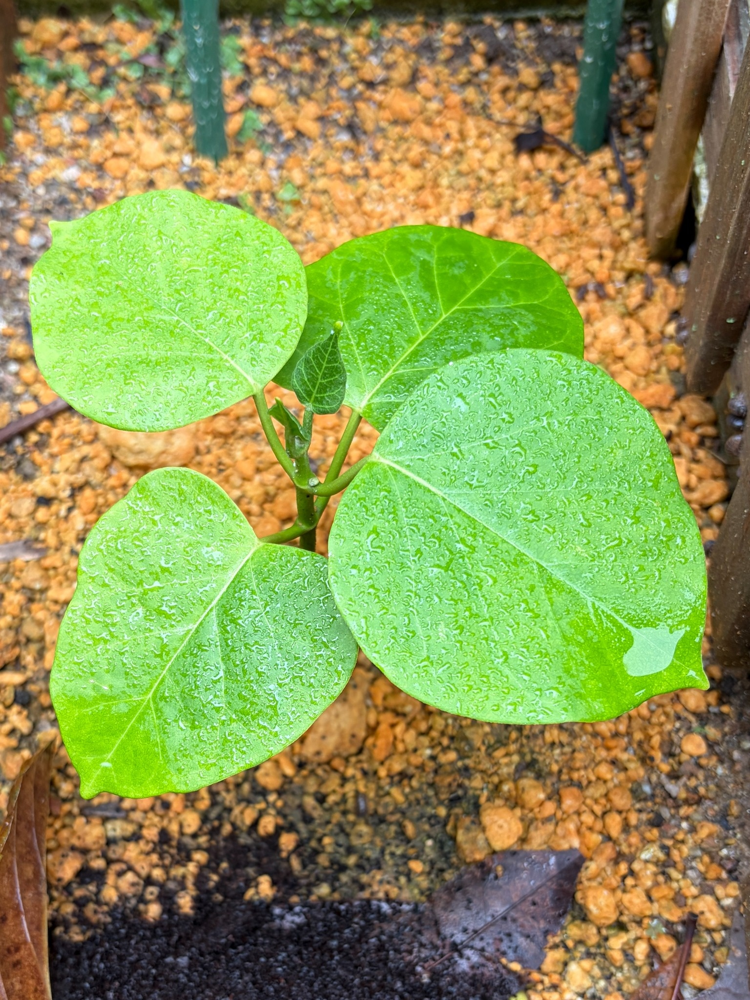

日当たりを確保できる場所へ移して、約4週間
6月27日のキジョランです。5月31日に、生育を促すため、これまでより日当たりを確保できる場所へ移動しました。それから27日がたち、現在の葉や茎の様子を記録しました。
4月25日は、冬を越した大きな葉に黄変や傷みが見られ、中央の茎先には小さな葉が顔を出していました。葉の間に空間があり、短い茎や葉柄がよく見える姿でした。
今回は、幅広い緑の葉が左右や手前に広がり、葉同士が重なっています。中央には小さな新葉も見え、春とは違う、葉の面積を感じる姿になりました。
まだ花や蕾は見られませんが、今は大きな葉の広がりと、茎先の新しい葉が見どころです。

大きな葉が広がり、株にボリュームが出てきました
大きく広がった葉は、左上、奥、右手前、左下にそれぞれ見えます。特に右手前の葉は幅があり、丸みのある葉身が大きく広がっています。左下の葉も手前へ伸び、株の中心を囲むような姿です。
4月25日は、葉が離れて見え、株の中央が比較的開いていました。今回は右手前の葉が奥の葉に重なるなど、葉の重なりが増えています。一枚一枚の葉が占める面積が大きく、株全体にも厚みが感じられるようになりました。
ただし、撮影する向きや距離が異なるため、葉の大きさを数字で比較することはできません。それでも、春の記録と比べて、幅広い葉が重なって広がる姿になったことは、今回の大きな変化です。
葉柄は中央の茎から斜め上や横へ伸び、それぞれの葉を支えています。葉が一方向にまとまらず、向きを変えて広がっているため、上から見ると株を囲むように緑が広がっています。
4月に目立った黄色い葉とは、印象が変わりました
4月25日は、左上や手前の大きな葉に黄色から黄緑色の部分が広がり、葉脈に沿って緑色が残るような濃淡が見られました。
今回の葉は、明るい緑色から濃い緑色が中心です。左上の葉は明るい黄緑色に見えますが、奥の葉には濃い緑色があり、右手前と左下の葉も緑の葉面が広がっています。春のように、黄色くなった葉が株全体の印象を強くする姿とは変わってきました。
一方で、葉ごとの色は一様ではありません。葉の向きや光の当たり方に加え、表面が濡れていることでも、明るさや色合いが違って見えます。色だけを比べて、すべての葉の状態が同じだと考えないようにしたいと思います。
また、4月に黄変していた葉と、今回広がっている葉が、それぞれ同じ葉なのかまでは特定できません。黄色かった葉がそのまま緑に戻ったと決めるのではなく、今の株に緑の葉が広がっていることを、今回の姿として残しておきます。
葉脈がはっきりし、丸みのある葉の形がよく分かります
大きな葉には、葉の付け根から先端へ伸びる太い葉脈があり、そこから左右へ枝分かれする筋が見えます。奥の濃い緑色の葉では、周囲との色の違いによって葉脈が特にはっきりしています。
右手前の葉は、丸みのある広い葉身から先端へ向かって細くなっています。左上や左下の葉にも同じような幅広さがあり、小さな株でも一枚一枚の葉に存在感があります。
葉の縁は少し波打ったり、部分的に浅くへこんだりしていますが、全体としては広い葉面が保たれています。細い葉が数多く付く植物とは違い、少ない枚数でも大きな葉が広がることで、株の姿が大きく変わるのだと感じます。
葉の表面には、たくさんの水滴が残っています
この日の葉の表面には、細かな水滴がたくさん付いています。右手前の大きな葉では、細かな粒に加えて、水がつながって広がった部分も見られます。
左上や左下の葉にも水滴が広く残り、葉面が光を反射しています。そのため、葉の表面が白っぽく見えたり、細かな模様があるように見えたりするところがあります。
濡れた葉は、乾いているときとは違う表情です。葉色の違いを見るときも、この水滴の反射を含めた見え方であることを覚えておきたいと思います。
中央には、小さな新葉が立ち上がっています
大きな葉の間、株の中央には、小さな濃い緑色の葉が立ち上がっています。周囲の葉に比べるとまだかなり小さいものの、葉脈がはっきりと見え、葉の形も分かるようになっています。
そのすぐそばには、細く折り畳まれたような緑色の部分もあります。大きく開いた葉だけでなく、まだ展開の途中に見える部分が残っており、株の中心にも変化があります。
4月25日には、茎先に白っぽい毛をまとったような小さな葉が重なっていました。今回も先端付近に新しい葉が見られ、大きな葉を広げるだけでなく、中央の成長も続いているように感じます。
ただ、4月に出ていた小さな葉が、今回のどの葉に当たるのかまでは分かりません。今は、広がった葉と、これから広がる小さな葉が同時に見られることを記録しておきます。
見える葉には、大きな穴や枯れ込みは目立ちません
4月25日は、手前の葉に、白っぽく傷んで一部が穴になった部分がありました。周囲が茶色く縁取られ、その傷みがよく目立っていました。
今回、大きく広がっている葉には、同じような大きな穴や、広い範囲の茶色い枯れ込みは見られません。見える範囲では、葉の面がよく保たれています。
葉の縁には小さなへこみなどがありますが、大きな葉が広く残っているため、春よりも緑の面積を感じます。ただし、以前傷んでいた葉が治ったという意味ではなく、今回見えている葉の状態として記録しておきたいと思います。
茎はまだ短く、長いつるが伸びる姿は見られません
中央の茎は緑色で、葉柄が付く部分を挟みながら、上へ伸びています。葉の間から茎の一部が見え、そこに小さな新葉が付いています。
株の後ろには支柱が見えますが、この写真の範囲では、長いつるが支柱に巻き付いて伸びている様子はありません。今はまだ、短い茎の周囲に幅広い葉を広げた、まとまりのある姿です。
葉の面積が増えたことに比べると、つるの伸びはまだ目立ちません。これから先端が伸びるのか、それともまず葉が大きくなるのか、両方を見ていきたいと思います。
場所を移した後の姿として、これからも比較していきます
5月31日に日当たりを確保できる場所へ移したのは、少しでも生育を促したいと思ったためです。約4週間後の今回は、幅広い緑の葉が重なり、中央にも小さな葉が見られます。
春の黄変や傷みが目立った姿と比べると、緑の葉の広がりが印象的になりました。育てている側としては、こうして葉を広げた姿を見られることがうれしく感じられます。
ただ、春から初夏へ季節が進んだこともあり、今回の変化を場所の移動だけによるものと決めることはできません。移した日と、その後の株の姿を残し、これからの変化も続けて見ていきたいと思います。
花や蕾はまだなく、今は葉と茎の成長が中心です
6月27日の見える範囲には、花や蕾はありません。中央にある小さな緑色の部分も、葉の形や葉脈が見える新葉で、花が咲き始めている状態ではありません。
今回の記録で大きく変わったのは、開花の状況よりも、葉の広がりと株全体の印象です。4月25日の冬越し後の姿から、今回は緑の葉が重なり、小さな新葉も見られる姿になりました。
まずは中央の葉がどのように開くのか、そして茎先が伸びていくのかを楽しみにしています。日当たりを確保した場所で、これからどのように育っていくのか、引き続き見守っていきたいと思います。